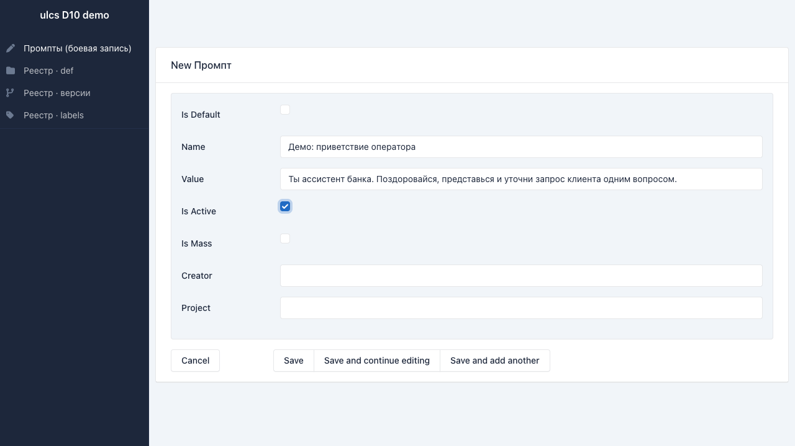
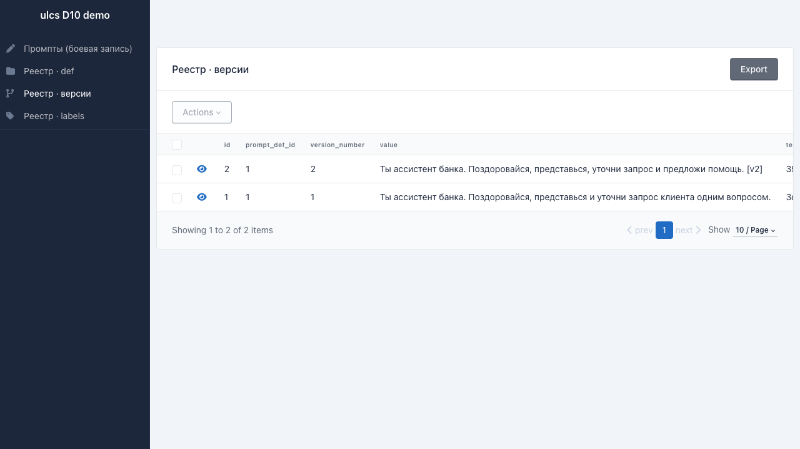
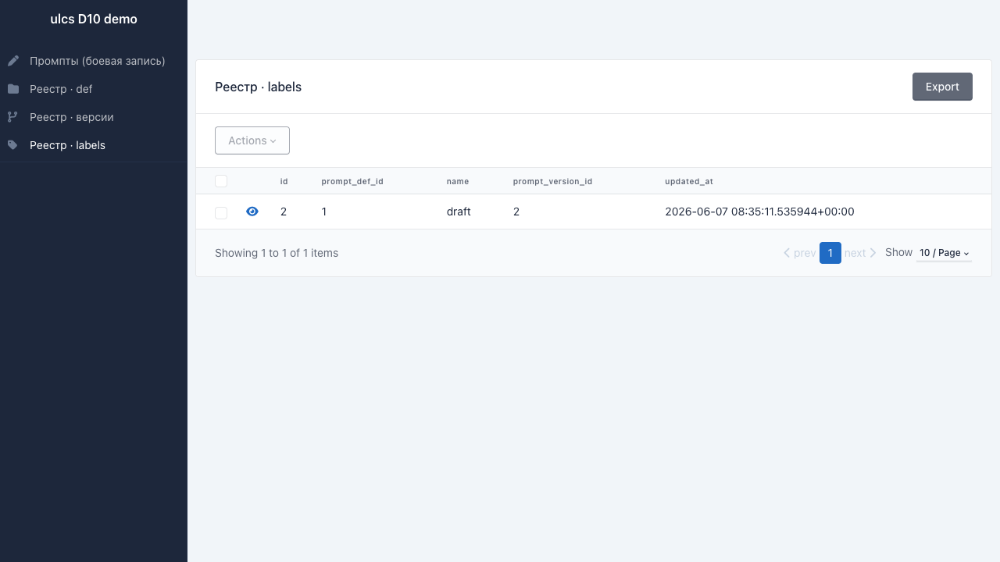
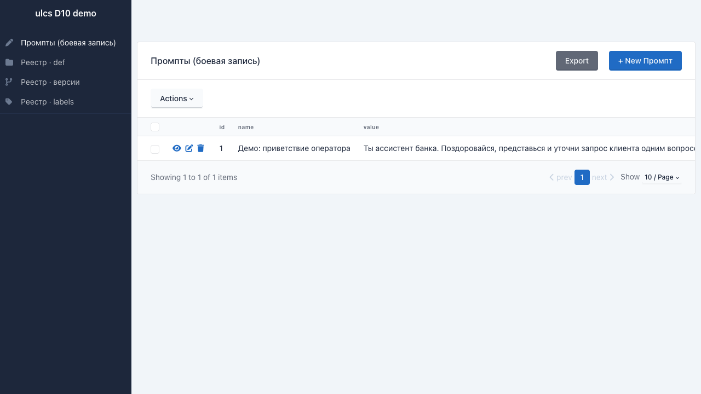
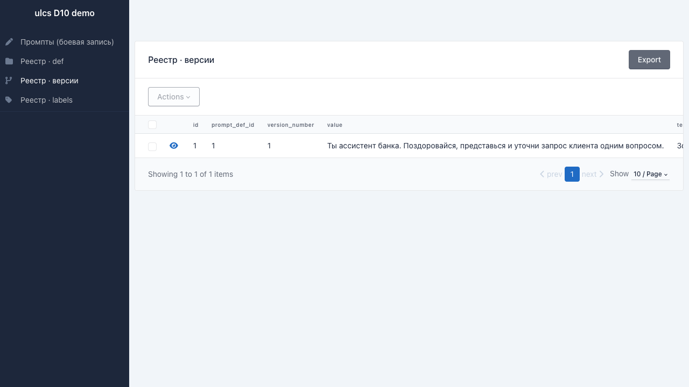
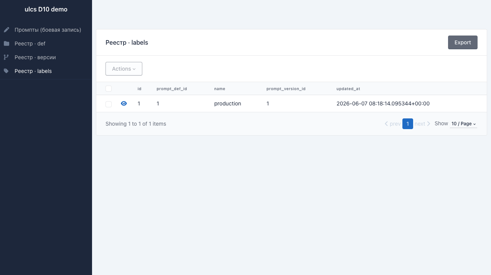

Каждая правка формулировки оценки звонка становится проверяемой гипотезой с измеримым результатом. Эта страница объясняет на пальцах, что уже работает, что в плане и зачем это аналитику оценки звонков.
Звонок проходит путь от записи до оценки. Промпт - это формулировка, по которой LLM-модель оценивает разговор на шаге VoiceAnalitix. Версионирование добавляется именно тут.
Версионирование живёт на шаге оценки: фиксирует, какой именно версией промпта оценён каждый звонок.
Сейчас живут около десяти формулировок-промптов, их правят прямо в работе. Когда формулировку меняют, старая просто перестаёт применяться. Отсюда три повторяющиеся проблемы.
По готовой оценке звонка трудно восстановить, какой именно версией промпта её получили.
После правки формулировки нет честного способа измерить, стало лучше или хуже.
Разные формулировки оценивают один аспект по-разному, и расхождения никто не считает - видно только на глаз.
Рабочий процесс правки промпта не меняется. Меняется то, что происходит «под капотом» в момент сохранения. Ниже - демонстрация на тестовом стенде (данные синтетические).

1 2
1 2
1Три схемы бэкенда - на уровне идеи, без кода.
🔒 версия неизменна после создания · указатели production/draft переезжают между версиями · каждая оценка помнит свою версию.
Боевая запись фиксируется первой и независимо. Сбой зеркала логируется и чинится сверкой, но не роняет оценку звонков.
Версионирование - это рельсы под этот цикл. Без него правку нельзя ни прогнать по истории, ни честно сравнить.
Механика собрана и закрыта тестами. Ниже - возможности и демонстрация работы на тестовом стенде.



Два обезличенных примера - без реальных звонков, имён и текстов промптов.
Отдел продаж ввёл новый скрипт разговора. Нужно понять, ловит ли его текущая оценка звонков.
Есть два варианта формулировки одного критерия. На звонке версия A ставит «успех», версия B - «провал».
Разделяю прямо, чтобы не было ложных ожиданий.
Механика собрана, проверена тестами.
Механика готова, запуск на боевых данных - впереди.
Сейчас критерий чаще всего отвечает «да / нет» - выполнен или нет. Следующий шаг - оценка по шкале (1-5 или 1-10). Это идея на будущее, в коде её пока нет.
Критерий выполнен или нет. Просто, но грубо: «почти получилось» и «совсем мимо» сливаются в одно «нет».
Видна степень: насколько хорошо отработан критерий, а не только факт «да/нет».